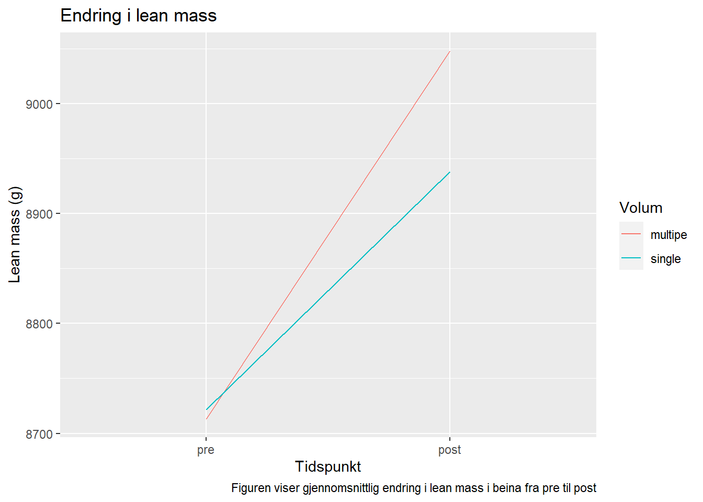
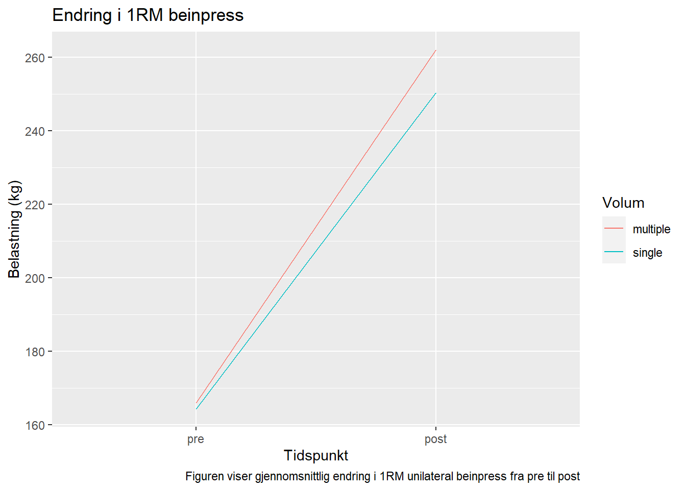

| Kvinner | Menn | |||
|---|---|---|---|---|
| Inkludert | Ekskludert | Inkludert | Ekskludert | |
| Antall | 18 | 4 | 16 | 3 |
| Alder | 22 (1.3) | 22.9 (1.6) | 23.6 (4.1) | 24.3 (1.5) |
| Vekt (kg) | 64.4 (10) | 64.6 (9.7) | 75.8 (11) | 88.2 (22) |
| Hoyde (cm) | 168 (6.9) | 166 (7.6) | 183 (5.9) | 189 (4.6) |
| Verdiene er presentert som gjennomsnitt og standardavvik | ||||
5 Repeated measures
5.1 Introduksjon
Styrketrening er trening som har som hensikt å vedlikeholde eller øke muskelmasse eller -styrke. Treningsformen består av repetisjoner og sett som sammen med treningsfrekvens utgjør det totale treningsvolumet. I tillegg til dette har vi intensiteten på treningen som i styrketrening ofte styres av prosent av en repetisjon maksimum (%RM) eller repetisjoner i reserve (RIR). Et resultat av styrketrening er at den aktuelle muskelgruppen blir både større og sterkere . Forklaringne bak dette logger i at muskelfibrene øker i tverrsnitt (hypertrofi) som et resultat av fysiologiske adaptasjoner knyttet til styrketrening. Hos utrente mennesker kan man typisk se en økning i muskelfibertverrsnitt på ~0,1-0,5% per treningsøkt og en økning i muskelstyrke på ~1% per treningsøkt i de første 8-12 ukene (Wernbom, Augustsson, and Thomeé 2007).
Hvilket treningsvolum og hvilken intensitet som er mest optimalt for å øke muskelstyrke og muskelmasse er et interessant tema. På lik linje med andre former for trening er hva som er mest optimalt avhengig av den enkeltes utgangspunkt og hva som er målet med treningen. Mange opplever å ha travle hverdager med minimalt med tid til trening. Dette i kombinasjon med stillesittende arbeidsdager er ikke positivt for helsen. Fysisk aktivitet bør i større grad prioriteres. I en travel hverdag kan det være avgjørende å finne en form for trening som tar minst mulig tid, men som samtidig gir en god effekt. Studier viser at muskelstyrke og -masse reduseres betraktelig fra 50 årene (Deschenes 2004; Janssen et al. 2000), og dersom denne aldersrelaterte prosessen får gå sin gang vil det kunne utvikles til sarkopeni. Sarkopeni er aldersrelatert tap av muskelmasse, som reduserer funksjonsevnen og livskvaliteten, samt øker risiko for sykdom og tidlig død (Beaudart et al. 2017; Deschenes 2004). Styrketrneing har vist seg å ha en positiv effekt på muskelmasse hos både menn og kvinner (Roth et al. 2001). Dersom man kunne utviklet et tidseffektiv styrketreningsprogram vil det muligens kunne hjelpe mennesker i en travel hverdag med å gjennomføre styrketrening. Det vil isåfall ha en positiv effekt både for folkehelsen men ikke minst for hvert enkelt individ som vil oppleve å ha en bedre helse og større grad av livskvalitet og selvstendighet i de senere årene.
Det er flere studier som har undersøkt forskjellen mellom ett og tre sett. I Rhea et al. (2002) sin metaanalyse kommer det frem at at styrketrening med tre sett ga signifikant større økning i styrke sammenliknet med ett sett. Rønnestad et al. (2007) sin studie ga tilsvarende resultater, i tillegg til å kunne konkludere med at tre sett resulterte i større grad av hypertrofi enn ett sett.
Med denne kunnskapen er hensikten med dette studet å undersøke hvorvidt det er en forskjell og hvor stor den eventuelle forskjellen er mellom styrketrening gjennomført med ett og tre sett på muskelstyrke og -masse i beina hos voksne kvinner og menn.
5.2 Metode
5.2.1 Deltakere
Det ble rekruttert 41 kvinner og menn i alderen 18-40 år til å delta i studien. For å kunne delta i studien måtte deltakerne ikke røyke, ikke ha trent mer enn 1 økt per uke de siste 12 månedene, ikke være allergisk mot bedøvelse, ikke ha fysiske skader som forhindrer dem i å gjennomføre treningen og heller ikke bruke medisiner som kunne påvirket treningsadaptasjoner. Med begrunnelse i at deltakerne ikke hadde gjennomført mer enn 85% av treningsøktene av ulike årsaker, ble syv deltakere ekskludert fra dataanalysene.
5.2.2 Styrketrening
Intervensjonen besto av 12 uker med styrketrening for hele kroppen med en belastning på 7-10RM. Øvelser på udnerekstremitetene ble gjennomført unilateralt for å kunne gjøre within subject differensiering på treningsvolum. Det ble tilfeldig betsemt hvilket bein som skulle ha lavt- (ett sett) og moderat volum (tre sett) hos alle deltakerne. Muskelstyrke ble målt ved baseline, ved uke 3, 5 og 9, og ved intervensjonens slutt. Kroppssammensetning ble målt pre og post.
5.2.3 Tester
Maksimal styrke ble målt som en repetisjon maksimum (1RM) i en unilateral beinpress. Testen betso av en standardisert oppvarming på 50, 75 og 85% av (estimert) 1RM. Deretter ble motstanden økt gradvis til deltakeren ikke lenger klarte å gjennomføre en repetisjon (4-6 forsøk). Den høyeste vekta deltakeren klarte ble notert som 1RM.
Kroppssammenseting ble målt ved Dual Energy x-ray Absorptiometry (DXA) etter en standardisert protokoll. Deltakerne fastet i minimum 2t og hadde ikke gjort noen form for anstrengende trening de siste 48t.
5.2.4 Data
Det ble gjort en paired t-test på differansen mellom ett og tre sett på lean mass i beina og på differansen mellom ett og tre sett på 1 RM unilateral beinpress. Figurene illustrerer den gjennomsnittlige endringen fra pre til post for ett og tre sett for både lean mass og 1 RM unilateral beinpress i absolutte tall. All data er analysert ved bruk av RStudio 2023.06.1.
5.3 Resultater

Resultatene fra den parrede t-testen viser at det er en signifikant forskjell mellom ett og tre sett på lean mass i beina med en p-verdi på 0.036. Som figuren viser, hadde begge beina et tilnærmet likt utgangspunkt ved pre-test. Begge beina har økt mengde lean mass fra pre til post, men det beinet som har trent tre sett har økt ytterligere.

Resultatene fra den parrede t-testen viser at det er en signifikant forskjell mellom ett og tre sett på ending i 1 RM unilateral beinpress med p-verdi på 0.025. Som figuren viser, hadde begge beina et tilnærmet likt utgangspunkt ved pre-test. Begge beina har økt sin maksimale styrke fra pre til post, men det beinet som har trent tre sett har økt noe mer.
5.4 Diskusjon
I denne studien ble spørsmålet om hvorvidt det er en forskjell, og hvor stor den eventuelle forskjellen er, mellom styrketrening gjennomført med ett og tre sett på muskelstyrke og -masse i beina hos 34 voksne kvinner og menn, besvart med at tre sett ga en større økning i muskelstyrke og -masse hos voksne menn og kvinner.
Resultatene viste at det beinet som trente med tre sett hadde en signifikant større endring i både lean mass og 1RM unilateral beinpress sammenliknet med det beinet som kun trente ett sett. Resultatene stemmer over ens med resultatene i Krieger (2009) og Krieger (2010), der det ble konkludert med at styrketrening moderat volum ga en bedre effekt på muskelstyrke og -masse enn lavt volum. De fysiologiske prosessene som skjer når en trener styrke kan se ut til å ikke bare påvirkes av det å trene styrke, men også av treningsvolumet, der et høyere volum er å foretrekke fremfor et lavere volum (Schoenfeld, Ogborn, and Krieger 2016).
Til tross for dette hadde også det beinet som kun trente ett sett også en stor endring i både muskelstyrke og -masse. Det betyr at det absolutt ikke er bortkastet å kun trene ett, men det er bedre å trene tre sett enn å trene ett sett.